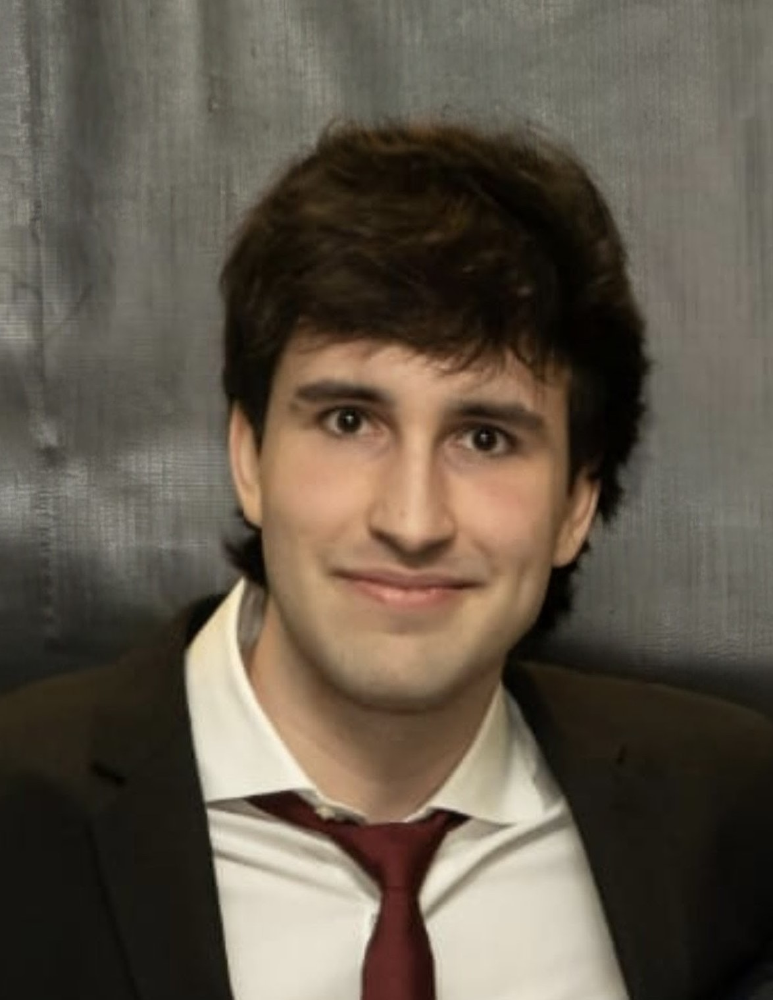

Hi! I'm Mario Gavín Clavero, a Technical Game Designer based in Spain, passionate about turning complex ideas into robust, engaging gameplay systems.
I bridge the gap between creative design and technical implementation. Currently pursuing a Double Degree in Computer Engineering and Game Design at Universidad San Jorge, my background allows me to not only conceptualize mechanics but also program them. Being fluent in languages like C# and C++ helps me prototype rapidly and communicate effectively with developer teams.
My design philosophy is simple: mechanics should drive emotions. Whether I am balancing a multi-currency economy for a mobile game, engineering a stamina-based combat loop, or paper-prototyping a tabletop social deduction game, my focus is always on creating systemic rulesets that give players true agency and meaningful choices.
During my time working as a Gameplay Developer at Kraken Empire, I learned what it takes to work in a professional environment, adapting quickly to challenges and focusing on the stability of the final product. I am a fast learner, highly adaptable, and always eager to tackle complex design challenges in collaborative environments.
Interested in my technical background?
Download my full CV (PDF) ➔
I am currently looking for internship opportunities and am ready to relocate. Feel free to reach out!